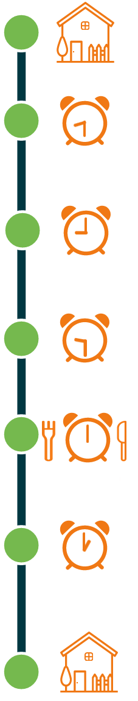

De valpoli
Iedereen vindt het fijn om zo lang mogelijk zelfstandig en onafhankelijk te blijven en eigen regie te houden.
Eén van de beste manieren om hiervoor te zorgen is, voorkomen dat u valt.
Dat doen we op een manier die prettig en gemakkelijk is.
Zo behalen we het beste resultaat.
Eén van de beste manieren om hiervoor te zorgen is, voorkomen dat u valt.
Dat doen we op een manier die prettig en gemakkelijk is.
Zo behalen we het beste resultaat.
U vindt op deze pagina de volgende informatie:
- Hoe komt u bij de valpoli?
- Wat doet een geriater (dokter)?
- Hoe ziet uw bezoek aan de valpoli eruit?
- Wat neemt u mee naar de valpoli?
- Onderwerpen om over na te denken
- Wilt u meer weten over vallen en valpreventie?
Hoe komt u bij de valpoli?
U wordt ’s ochtends verwacht op afdeling F5 Noord in het Amsterdam UMC ziekenhuis, locatie AMC.
Volg vanaf de ingang routenummer F.
Het duurt ongeveer 10-15 minuten om vanaf de ingang naar afdeling F te lopen.
Bent u slecht ter been? Lees dan hier meer informatie over de pendelbus en (interne) shuttlebus.
Bent u bij afdeling F, neem dan lift F en ga naar de vijfde verdieping.
U loopt nu rechtdoor naar de balie van de afdeling Short Stay.
U meldt zich aan deze balie. De baliemedewerkster en verpleegkundigen helpen u verder.
Klik op het onderstaande kaartje om deze groter te maken.
De oranje stippellijn laat de route vanaf de hoofdingang naar de lift F zien.

Kom niet alleen, maar neem (als dat kan) een naaste of mantelzorger mee.
Volg vanaf de ingang routenummer F.
Het duurt ongeveer 10-15 minuten om vanaf de ingang naar afdeling F te lopen.
Bent u slecht ter been? Lees dan hier meer informatie over de pendelbus en (interne) shuttlebus.
Bent u bij afdeling F, neem dan lift F en ga naar de vijfde verdieping.
U loopt nu rechtdoor naar de balie van de afdeling Short Stay.
U meldt zich aan deze balie. De baliemedewerkster en verpleegkundigen helpen u verder.
Klik op het onderstaande kaartje om deze groter te maken.
De oranje stippellijn laat de route vanaf de hoofdingang naar de lift F zien.
Heeft u hulp of ondersteuning nodig?
Bent u gevallen en kunt u niet zelfstandig naar het ziekenhuis kunt komen?Kijk op de website van het AmsterdamUMC voor informatie over hulp bij uw bezoek, zoals een zorgtaxi.
Wat doet een geriater (dokter)?
Een geriater is een dokter voor een oudere patiënt die tegelijkertijd last heeft van verschillende aandoeningen.Het kan bijv. gaan om (een combinatie van) lichamelijke, psychische, en sociale problemen.
De geriater werkt vaak samen met fysiotherapeuten en ergotherapeuten.
De geriater probeert er namelijk voor te zorgen dat eventuele korte onderzoeken na elkaar gepland worden.
Hoe ziet uw bezoek aan de valpoli eruit? Een tijdschema:

-
U ontvangt eerst een bevestigingsbrief van uw afspraak bij de valpoli.
Bij deze brief zitten vragenlijsten. Deze vragenlijsten vult u thuis in. -
U wordt ’s ochtends verwacht op afdeling F5 Noord in het
Amsterdam UMC ziekenhuis, locatie AMC -
Uw afspraak bij de valpoli start ongeveer een half uur later.
U begint uw bezoek bij de doktersassistente.
Zij stelt u wat vragen, neemt bloed bij u af en maakt een hartfilmpje. -
Ook worden u in de ochtend vragen gesteld over uw gezondheid en medicijnen.
Soms is het maken van een Botdichtheidsmeting (DEXA-scan) noodzakelijk. -
Rond 12 uur ’s middags kunt u lunchen.
U krijgt van ons lunch aangeboden. -
Het eindgesprek is meestal tussen 1 en 2 uur 's middags.
Samen met de dokter bespreekt u uw situatie, maken we een plan en
krijgt u adviezen om uw valrisico te verlagen. -
Thuis kunt u op uw gemak alle informatie nog eens doorlezen
via dit Valportaal.
Zo houdt u zich gemakkelijker aan de adviezen en vergeet u niets.
Wat neemt u mee naar de valpoli?
- Een geldig legitimatiebewijs: paspoort, rijbewijs, toeristen- of identiteitskaart;
- Uw gegevens voor de verzekering;
- Uw AMC-kaart (als u deze heeft);
- Uw afspraakbevestiging (deze heeft u per post ontvangen);
-
De medicijnen die u gebruikt of een actueel medicijnoverzicht. U kunt dit opvragen bij uw apotheek.
Ook eventuele vitaminetabletten of pijnstillers van de drogist of supermarkt zijn verstandig om mee te nemen.
-
Neem een naaste, mantelzorger of vriend/vriendin mee.
Uw naaste kan wellicht extra informatie aan de dokter geven, maar kan ook goed meeluisteren. -
Trek gemakkelijke kleding aan.
U wordt namelijk lichamelijk onderzocht.
Het is prettig voor u en de dokter als u gemakkelijke kleding draagt.
Onderwerpen om over na te denken:
Om samen met uw dokter beslissingen te kunnen maken, is het belangrijk dat u van tevoren nadenkt over
bepaalde onderwerpen.
Zo kunt u bijvoorbeeld nadenken over wat uw wensen en doelen zijn.
Of over uw medicijngebruik: Welke medicijnen gebruikt u en voor welke klachten?
Bij de bevestigingsbrief van uw afspraak heeft u een overzicht gekregen met vragen die voor u relevant kunnen zijn.
Geef op dit overzicht aan welke vragen u tijdens uw gesprek aan de dokter wilt stellen.
Algemene tip: Schrijf uw vragen op.
Vaak zijn mensen bij de dokter vergeten wat ze wilden vragen.
Zorg dat u een handig lijstje maakt.
bepaalde onderwerpen.
Zo kunt u bijvoorbeeld nadenken over wat uw wensen en doelen zijn.
Of over uw medicijngebruik: Welke medicijnen gebruikt u en voor welke klachten?
Bij de bevestigingsbrief van uw afspraak heeft u een overzicht gekregen met vragen die voor u relevant kunnen zijn.
Geef op dit overzicht aan welke vragen u tijdens uw gesprek aan de dokter wilt stellen.
Algemene tip: Schrijf uw vragen op.
Vaak zijn mensen bij de dokter vergeten wat ze wilden vragen.
Zorg dat u een handig lijstje maakt.
Wilt u meer weten over vallen en valpreventie?
Op deze pagina vindt u verschillende folders over vallen en valpreventie